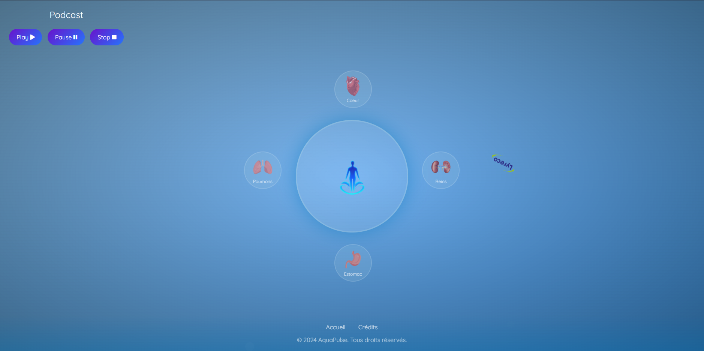
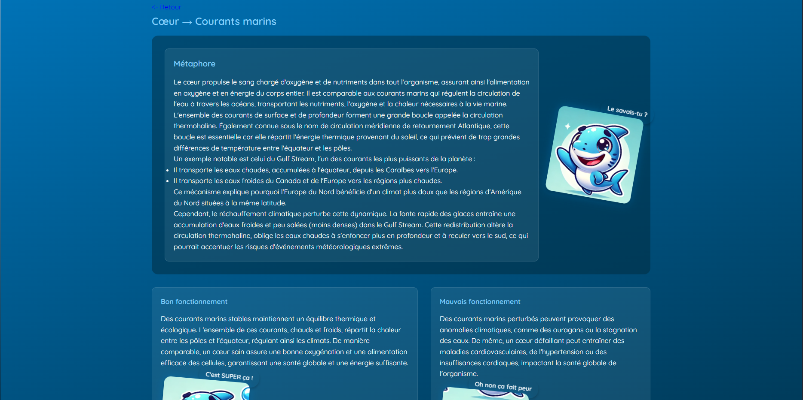
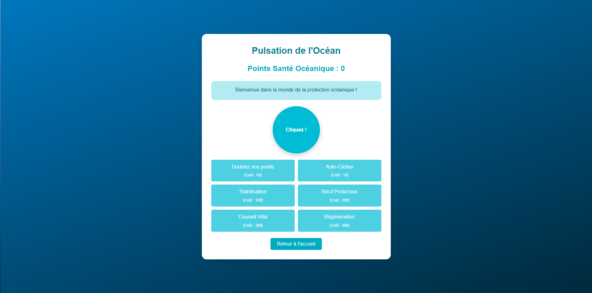
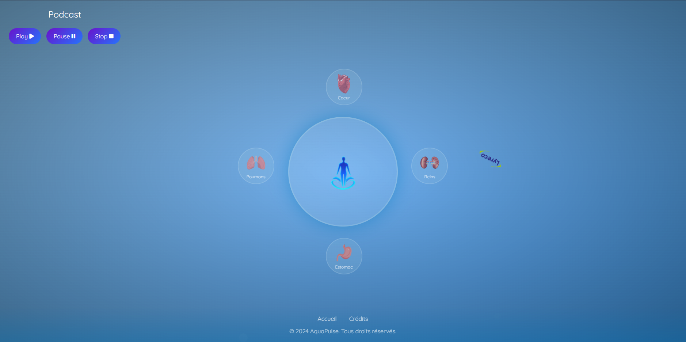
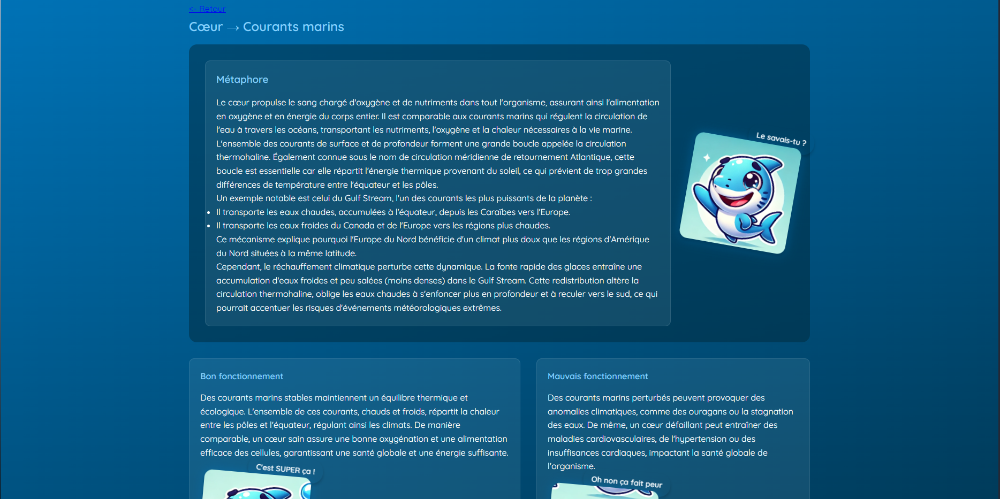
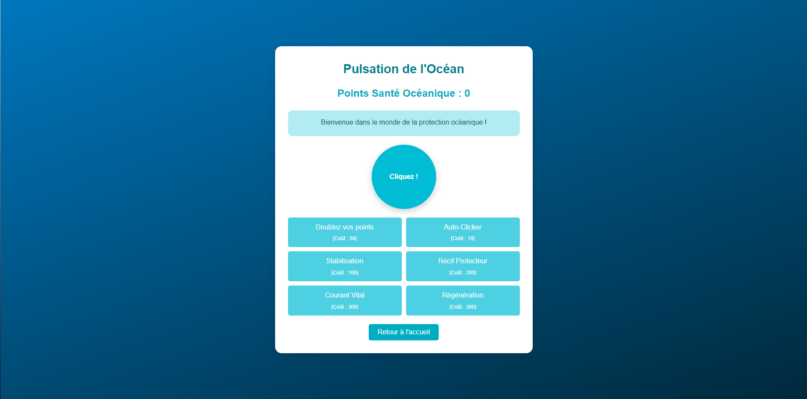

Nuit de l'info 2024 - Aquapulse
 





Description du projet
Aquapulse est une plateforme innovante qui explore la connexion profonde entre le corps humain et l’océan à travers quatre axes principaux : le cœur, les poumons, les reins et l’estomac. Ce projet, réalisé lors de la **Nuit de l'info 2024**, m’a permis de développer des compétences variées dans le développement web, la résolution de problèmes techniques complexes, et la conception d’expériences utilisateur immersives.
Ce projet avait pour but de rétablir un lien essentiel entre le corps humain et les bienfaits de l’océan. Inspirée par les cycles naturels et les fonctions physiologiques humaines, cette plateforme met en avant des contenus éducatifs et interactifs pour sensibiliser à la santé et à la préservation des écosystèmes marins.
Compétences acquises
- Conception UX/UI : Création d'une interface intuitive et immersive adaptée à un public varié.
- Développement front-end : Utilisation avancée de HTML5 et CSS3.
- Gamification : Intégration d’un mini-jeu sous forme de CAPTCHA.
- Gestion de contenu multimédia : Développement d’un lecteur de podcast intégré avec des transcriptions pour améliorer l’accessibilité.
- Collaboration d’équipe : Travail en groupe lors d’un événement intensif pour répondre rapidement à des défis techniques variés.
- Optimisation des performances : Gestion des ressources lourdes (audio, visuels) pour garantir une navigation fluide et rapide.
Défis techniques
- Inclure un podcast : Développement d’un lecteur audio intégré avec des fonctionnalités avancées (lecture en arrière-plan, reprise de l’écoute, transcriptions), nécessitant une gestion efficace des fichiers multimédias.
- Créer un CAPTCHA en forme de jeu : Conception d’un mini-jeu interactif lié à l’océan (exemple : guider un poisson jusqu’à un récif ou identifier une créature marine), permettant de valider les utilisateurs tout en rendant l’expérience ludique.
- Rendre le tout intuitif et ludique : Gamification complète de la plateforme, avec des animations, badges, quiz éducatifs et un design minimaliste inspiré de l’océan pour captiver l’utilisateur.
Impact
Pour les utilisateurs : Une meilleure compréhension de leur corps et de l’influence positive de l’océan sur leur santé, grâce à une expérience éducative et apaisante.
Pour les communautés environnementales : Une sensibilisation accrue à la nécessité de protéger les océans, en soulignant leur rôle fondamental pour la santé humaine.
Pour la recherche scientifique : Une plateforme qui vulgarise et diffuse des découvertes scientifiques sur les bienfaits de l’océan.
Détails du projet
- Client: Nuit de l'info 2024
- Date: Décembre 2024
- Rôle: Développeur et concepteur de la plateforme